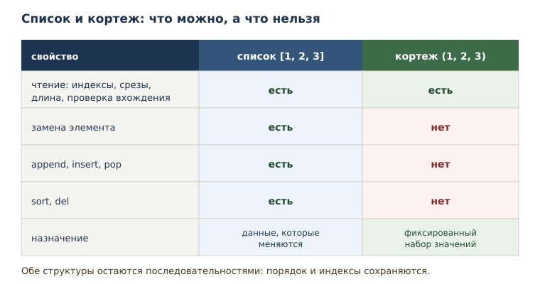
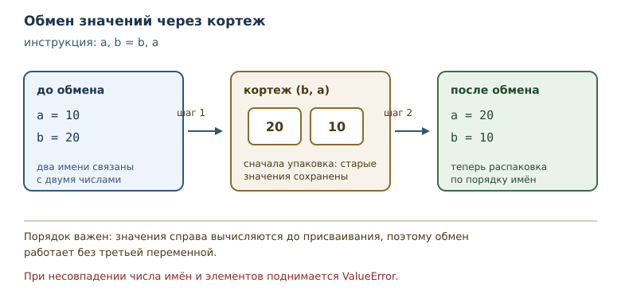

Кортежи, распаковка и неизменяемость
Неизменяемые последовательности, распаковка и роль кортежей в дизайне данных.
В этой главе
Список удобен, когда данные меняются. Но у изменяемости есть цена: любой, кому доступен список, может его испортить. Для набора значений, который должен остаться таким, каким его создали, Python предлагает другую последовательность — кортеж. В этой главе вы познакомитесь с кортежами, свойством неизменяемости и приёмом распаковки, который экономит строки и делает намерение кода яснее.
14.1 Зачем нужна неизменяемость
Представьте координату точки на плоскости: пара чисел (3, 4). Если
хранить её в списке, любая функция может написать point[0] = 100, и
координата молча изменится. Иногда это допустимо, но для координаты,
цвета, диапазона дат или записи из базы данных изменение обычно означает
дефект. Хочется, чтобы сама структура данных защищала смысл.
Неизменяемость — свойство объекта не менять состояние после создания. Неизменяемый объект можно безопасно передавать в функции и хранить дольше: никто не сможет его испортить. Кортеж — неизменяемая упорядоченная последовательность; он используется для фиксированных наборов значений, которые логически едины.
После этой главы вы сможете:
- создавать кортежи, в том числе из одного элемента;
- отличать кортеж от списка по поведению и по назначению;
- распаковывать последовательности в имена одной инструкцией;
- возвращать из функции несколько значений;
- объяснять, что неизменяемость защищает, а что нет.
14.2 Создание кортежа
Кортеж записывается перечислением значений через запятую; скобки необязательны.
point = (3, 4)
print(point)
print(len(point))
print(point[0], point[1])
print(4 in point)
print(type(point).__name__)
(3, 4)
2
3 4
True
tuple
Скобки часто пишут для читаемости, но решающую роль играет запятая.
a = 1, 2, 3
b = (1, 2, 3)
print(a)
print(a == b)
print(type(a).__name__)
(1, 2, 3)
True
tuple
Обе записи создают кортеж, и они равны: сравниваются значения, а не форма записи. Запятая — то, что превращает перечисление в кортеж.
Отсюда следует знаменитая ловушка с одним элементом. Запись (5) — это
не кортеж, а число в скобках. Кортеж из одного элемента требует запятой.
one = (5,)
not_tuple = (5)
print(type(one).__name__, len(one))
print(type(not_tuple).__name__, not_tuple)
print(one[0])
tuple 1
int 5
5
Пустой кортеж записывается как (). Он полезен как нейтральное значение:
например, когда функция по умолчанию возвращает «ничего».
14.3 Кортеж — это последовательность
Кортеж поддерживает всё, что умеет последовательность из двенадцатой главы: длину, индексы, отрицательные индексы, срезы, проверку вхождения и перебор.
values = (0, 1, 2, 3, 4)
print(values[1:3])
print(values[-1])
print(values[::-1])
print(2 in values)
(1, 2)
4
(4, 3, 2, 1, 0)
True
Срез кортежа возвращает кортеж, а не список. Это логично: часть
неизменяемой последовательности тоже неизменяема. Перебор работает как
обычно: for value in values обходит элементы в порядке их записи.
Сравнение кортежей
Кортежи сравниваются по элементам слева направо, как слова в словаре: сначала сравнивается первый элемент, при равенстве — второй, и так до первого различия.
print((1, 2) < (1, 3))
print((1, 2) < (2, 0))
print((1, 2) == (1, 2))
print((1, 2, 3) < (1, 2))
True
True
True
False
Первая пара различается вторым элементом: 2 меньше 3. Вторая — первым:
1 меньше 2, поэтому второй элемент уже не важен. Равные кортежи содержат
одинаковые элементы в одинаковом порядке. Последний пример показывает
правило для разной длины: если все общие элементы равны, более короткий
кортеж считается меньшим, поэтому (1, 2) меньше (1, 2, 3), и
выражение с перевёрнутым порядком даёт False.
Такое сравнение работает, когда элементы сравнимы между собой. Кортеж с числом и строкой на одной позиции сравнить не получится: Python не знает, что больше.
14.4 Неизменяемость
Главное отличие от списка: кортеж нельзя изменить после создания.
Попытка присвоить значение элементу поднимает TypeError.
values = (1, 2, 3)
values[0] = 10
TypeError: 'tuple' object does not support item assignment
Сообщение говорит буквально: объект типа tuple не поддерживает
присваивание элементам. Нет ни append, ни remove, ни sort — этих
методов у кортежа нет вовсе.
Обратите внимание на важное различие: неизменяемость запрещает менять объект, но не запрещает связать его имя с новым объектом.
values = (1, 2)
values = values + (3,)
print(values)
(1, 2, 3)
Здесь создан новый кортеж из двух старых, и имя values теперь указывает
на него. Старый кортеж (1, 2) не изменился — он просто больше не связан
с этим именем. Это то же поведение, что у строк: операции создают новые
значения.

Неизменяемость кортежа поверхностна. Если внутри кортежа лежит список, сам список остаётся изменяемым.
record = ([1, 2], "данные")
record[0].append(3)
print(record)
([1, 2, 3], 'данные')
Кортеж не даёт заменить элемент, но внутренний список можно менять, пока он остаётся тем же объектом. Неизменяемость защищает структуру, а не глубину вложенности.
14.5 Распаковка
Распаковка — присваивание элементов последовательности нескольким
именам одной инструкцией. Вы уже пользовались частным случаем: a, b = b, a меняет значения местами без промежуточной переменной.
a, b = 10, 20
print(a, b)
a, b = b, a
print(a, b)
10 20
20 10
Слева стоят имена, справа — последовательность. Python проходит по
элементам и связывает их с именами по порядку. Справа при этом сначала
создаётся кортеж (b, a), поэтому обмен работает: старые значения уже
зафиксированы до присваивания.
Число имён должно совпадать с числом элементов, иначе будет ошибка.
first, second, third = (1, 2)
ValueError: not enough values to unpack (expected 3, got 2)
Сообщение точно называет, сколько значений ожидалось и сколько пришло. Такая ошибка возникает при неверном предположении о длине данных.
Если элементов больше, чем имён, помогает звёздочка: она собирает остаток в список.
first, *rest = (1, 2, 3, 4)
print(first, rest)
*start, last = (1, 2, 3, 4)
print(start, last)
1 [2, 3, 4]
[1, 2, 3] 4
Звёздочка может стоять в любом месте, но одна на инструкцию. Собранный остаток всегда список — даже если исходная последовательность была кортежем, поскольку длина остатка заранее неизвестна.
Распаковка умеет заглядывать внутрь: если элемент сам по себе последовательность, его можно распаковать на месте, взяв шаблон в скобки.
point = (1, (2, 3))
x, (y, z) = point
print(x, y, z)
1 2 3
Шаблон слева повторяет структуру справа: первый элемент — число, второй — пара чисел. Такая запись встречается, когда функция возвращает пару «значение и его характеристики» и обе части нужны по отдельности.
Если структура не совпадает, ошибка зависит от того, чем именно. Когда во
вложенной части элементов больше, чем имён, возникает
ValueError: too many values to unpack; когда вложенный элемент вообще не
последовательность (например, число) — TypeError: cannot unpack non-iterable int object.

14.6 Упаковка кортежа
Упаковка кортежа — неявное создание кортежа перечислением значений через запятую. Именно она делает распаковку симметричной: справа кортеж упаковывается, слева распаковывается.
def divide_with_remainder(total, divisor):
return total // divisor, total % divisor
result = divide_with_remainder(17, 5)
print(result)
quotient, remainder = divide_with_remainder(17, 5)
print(quotient, remainder)
(3, 2)
3 2
Функция возвращает одно значение — кортеж, который создан упаковкой без скобок. Вызывающий код может принять его как кортеж целиком или сразу распаковать в два имени. Так в Python возвращают несколько значений: это не особая конструкция языка, а обычный кортеж.
Тот же приём встроен в некоторые функции стандартной библиотеки.
Например, divmod возвращает частное и остаток.
quotient, remainder = divmod(17, 5)
print(quotient, remainder)
3 2
Возврат кортежа — часть контракта функции, и его стоит описать в docstring: сколько значений, в каком порядке, что означает каждое. Особенно это важно, когда значения одного типа: перепутать «часы» и «минуты» легко, а ошибка проявится далеко от места вызова.
def split_time(minutes):
"""Вернуть пару (часы, минуты) для заданного числа минут."""
if minutes < 0:
raise ValueError(f"минуты не могут быть отрицательными: {minutes}")
return minutes // 60, minutes % 60
print(split_time(150))
(2, 30)
Docstring называет порядок элементов, поэтому вызывающий код знает, что первое значение — часы. Проверка на отрицательное значение показывает ещё одно преимущество: функция сама сообщает о неверном аргументе, а не возвращает бессмысленную пару.
Преобразование между списком и кортежем
Список и кортеж легко превращаются друг в друга встроенными функциями
list и tuple. Это создаёт новый объект нужного типа и копирует
элементы.
print(list((1, 2, 3)))
print(tuple([4, 5]))
print(len(tuple([4, 5])))
[1, 2, 3]
(4, 5)
2
Преобразование полезно на границах: функция вернула кортеж, а дальше
нужен изменяемый список — сделайте list(...) явно. Обратное
преобразование tuple(...) фиксирует набор значений, полученный из
изменяемого источника.
14.7 Распаковка в цикле
Распаковка работает везде, где ожидается последовательность, в том числе в заголовке цикла.
pairs = [(1, 2), (3, 4), (5, 6)]
for left, right in pairs:
print(left + right)
3
7
11
На каждом шаге for получает очередной кортеж и распаковывает его в
left и right. Такой код читается лучше, чем обращение по индексам
pair[0] и pair[1]: имена объясняют смысл значений.
Кортежи как строки таблицы
Кортеж хорошо подходит для записи с фиксированным набором полей: пара «название — значение», координата, результат измерения. Набор таких записей удобно хранить списком и обходить циклом с распаковкой.
months = [("январь", 120), ("февраль", 90), ("март", 150)]
total = 0
for name, amount in months:
print(name, amount)
total += amount
print("итого:", total)
январь 120
февраль 90
март 150
итого: 360
Каждая строка данных — кортеж из двух элементов. Распаковка в заголовке цикла сразу даёт осмысленные имена, поэтому в коде нет «магических» индексов. Но порядок полей при этом фиксирован структурой записи: если в кортеже поменять местами название и сумму, имена получат неверные значения. Порядок стоит описать в docstring функции или в комментарии к данным. Если позже понадобится изменить запись — добавить поле или поправить значение, — кортеж придётся заменить новым, и это заметное место в коде: случайно испортить данные труднее.
14.8 Типичные ошибки
Считать (5) кортежем. Это число в скобках. Кортеж из одного
элемента — (5,), с запятой.
Пытаться изменить кортеж. values[0] = 10, values.append(1) и
values.sort() невозможны. Если нужна изменяемость, берите список.
Смешивать кортеж и список в одной операции. (1, 2) + [3] —
TypeError: складывать можно только последовательности одного типа.
Преобразование делается явно: list(...) или tuple(...).
Ошибаться в числе имён при распаковке. a, b = (1, 2, 3) даёт
ValueError. Если длина заранее неизвестна, используйте звёздочку.
Забывать про вложенные изменяемые объекты. Кортеж с кортежами внутри неизменяем полностью, только если все вложенные объекты неизменяемы; кортеж со списком внутри — лишь поверхностно.
Использовать кортеж там, где данные будут меняться. Тогда каждая
правка превращается в создание нового кортежа: values = values + (x,).
Иногда это нормально, но для накопления результатов лучше список.
14.9 Как выбрать структуру
Выбор между списком и кортежем — это выбор между «будет меняться» и «должно остаться как есть». Полезно задать три вопроса.
Первый: нужно ли добавлять или удалять элементы после создания? Если да, нужен список: у кортежа таких операций нет.
Второй: означает ли набор значений одну сущность? Координата (3, 4),
диапазон (0, 100), пара «часы, минуты» — это единые значения, у
которых нет смысла менять одну часть отдельно. Для них кортеж точнее
выражает намерение.
Третий: будет ли структура использоваться как неизменяемый ключ или храниться долго? Неизменяемость делает такое использование безопасным: никто не испортит данные «на месте». Подробнее о том, какие объекты подходят для ключей, — в главе о множествах.
Если ответы противоречат друг другу, начинайте со списка: он универсальнее, а перейти к кортежу можно позже, когда станет ясно, что изменяемость не нужна. Обратный переход тоже возможен, но обычно он означает, что структура выбрана неверно.
14.10 Упражнения
1. Чтение кортежа
Дан кортеж point = (10, 20). Не запуская код, определите: первый
элемент, последний элемент, длину и результат проверки 5 in point.
Проверьте ответы программой.
2. Кортеж из одного элемента
Объясните, чем отличаются записи (7) и (7,). Создайте кортеж из
одного элемента, выведите его тип, длину и единственный элемент.
3. Срезы кортежа
Для values = (1, 2, 3, 4, 5) запишите, что вернут values[1:4],
values[::2] и values[-2:]. Проверьте и объясните, почему срез
кортежа — кортеж, а не список.
4. Обойти неизменяемость
Дан кортеж values = (1, 2, 3). Покажите, что присваивание элемента
невозможно, и получите кортеж (1, 2, 20) без изменения исходного
объекта. Объясните, что именно произошло.
5. Обмен значений
Поменяйте местами значения двух имён a = 1 и b = 2 одной инструкцией
распаковки. Объясните, почему для этого не нужна третья переменная.
6. Звёздочка
Для кортежа (1, 2, 3, 4, 5) распакуйте первое значение, остаток в
середине и последнее значение. Какие типы получились у трёх имён?
7. Несколько значений из функции
Напишите функцию split_time(minutes), которая возвращает часы и
остаток минут. Распакуйте результат в два имени и выведите, затем
выведите результат целиком для 75 минут.
8. Кортежи в цикле
Дан список пар [(1, "один"), (2, "два")]. Пройдите по нему циклом,
распаковывая каждую пару, и выведите номер и название через дефис.
9. Возврат двух значений
Напишите функцию min_and_max(a, b), которая возвращает меньшее и
большее значение в этом порядке. Распакуйте результат для (9, 4).
10. Мини-задача: расстояние от начала
Дан кортеж point = (3, 4). Распакуйте его в x и y, вычислите
квадрат расстояния от начала координат x ** 2 + y ** 2. Объясните,
почему для координаты выбран кортеж, а не список.
11. Сумма произведений
Напишите функцию, которая принимает список пар и возвращает сумму
произведений элементов каждой пары. Проверьте на
[(1, 2), (3, 4), (5, 6)].
14.11 Проверка понимания
- Чем кортеж отличается от списка по набору операций и по назначению?
- Почему запись
(5)не создаёт кортеж? - Что означает неизменяемость и почему она полезна при передаче данных в функцию?
- Почему кортеж со списком внутри нельзя назвать полностью неизменяемым?
- Чем упаковка отличается от распаковки кортежа?
- Как с помощью одной инструкции поменять значения двух имён местами?
- Что произойдёт при несовпадении числа имён и элементов при распаковке?
14.12 Что дальше
Кортежи и списки задают последовательности, но текст — особая последовательность: его элементы — символы Unicode, а операции над текстом нужны почти в каждой программе. Об этом — в главе «Строки: методы, форматирование и Unicode».